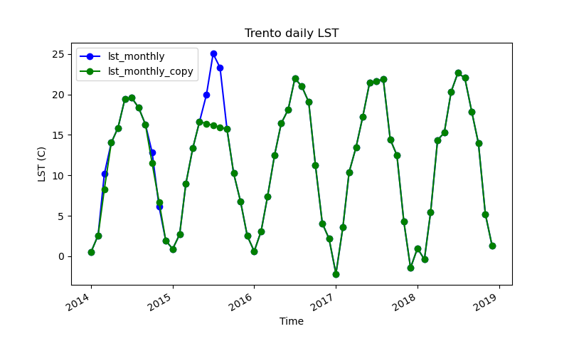
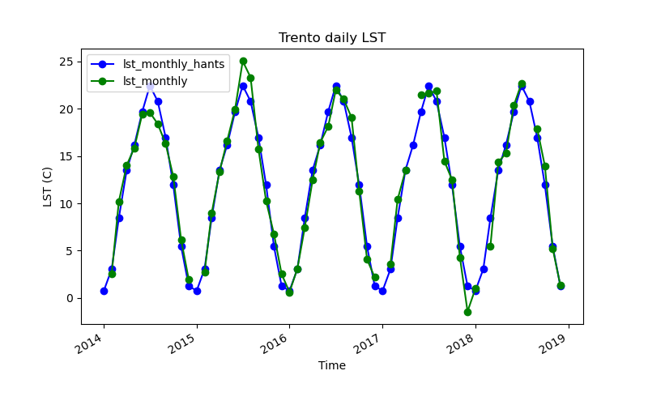
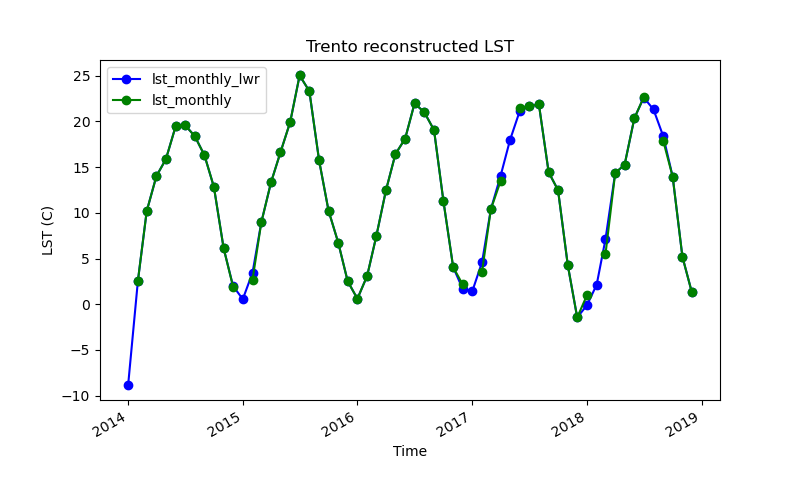

# Aggregate daily time series into monthly
gs.run_command("t.rast.aggregate",
input="lst_daily",
output="lst_monthly",
basename="lst_monthly",
method="average",
granularity="1 months",
suffix="gran")Time series gap filling
GRASS GIS
Time series
raster
Advanced
Python
In this fifth part of the time series tutorials, we will go through an important topic when working with optic remote sensing derived data or products: gaps and gap filling. There are several other methods to perform missing data imputation. Here, we’ll only demonstrate the usage of GRASS GIS tools that allow us to perform gap filling in time, also called temporal interpolation. Specifically, we’ll show how to reconstruct missing data using:
- t.rast.gapfill,
- r.hants, and
- r.series.lwr.
Setup
This tutorial can be run locally or in Google Colab. However, make sure you install GRASS GIS 8.4+, download the LST sample data and set up your project as explained in the first part of these time series tutorials.
There are different types of gaps that we might want/need to fill when working with time series data: - full maps missing, e.g. a daily time series where some days are missing because product tiles missing from the archive, or when we want to interpolate from weekly to daily data - series is complete but (some) maps have missing data because of clouds, snow, product quality flags applied, etc.
Full maps missing
For the case of full maps missing, GRASS GIS offers simple linear interpolation in time through the t.rast.gapfill tool. Let’s see an example: we will first aggregate our daily LST time series with a monthly granularity, then make a copy of it using t.copy, unregister a couple of maps here and there with t.unregister, apply a temporal linear interpolation with t.rast.gapfill and compare the results.
# Create a copy
gs.run_command("t.copy",
input="lst_monthly",
output="lst_monthly_copy")
# Unregister maps from lst_monthly_copy
# Note that we remove 1, 2 and 3 consecutive maps in different periods of the year
to_unregister=[lst_monthly_2014_03,lst_monthly_2014_10,lst_monthly_2014_11,lst_monthly_2015_06,lst_monthly_2015_07,lst_monthly_2015_08]
gs.run_command("t.unregister",
input="lst_monthly_copy",
maps=to_unregister)
# Check gaps
gs.read_command("t.rast.list",
input="lst_monthly_copy",
method="deltagaps")# Fill gaps
gs.run_command("t.rast.gapfill",
input="lst_monthly_copy",
basename="gaps")
# Check gaps again and compare values with lst_monthly
gs.run_command("t.rast.list",
input="lst_monthly_copy",
columns="name,start_time,min,max",
where="start_time < '2016-01-01'")
gs.run_command("t.rast.list",
input="lst_monthly",
columns="name,start_time,min,max",
where="start_time < '2016-01-01'")# Plot the two time series for the city of Trento
!g.gui.tplot strds=lst_monthly,lst_monthly_copy \
coordinates=4410837.455830389,2559852.473498233 \
title="Trento daily LST" xlabel="Time" ylabel="LST (C)" \
size=800,500 output=trento_gapfilled.png
Note
t.unregister allows us to remove maps from the temporal database or from a STRDS without actually removing them from the mapset, i.e., we only remove their timestamp and hence their record in the STRDS object.
Maps with holes
For the case when maps have no data areas (i.e. holes or gaps) because of cloud or cloud shadow masking, or as a result of QA flags application, two GRASS tools can be used, namely r.hants or r.series.lwr. When to use one or the other will mostly depend on the variable that the time series represent (i.e., temperature, NDVI, chlorophyll, etc.) and its granularity (i.e., hourly, daily, weekly, monthly, etc.).
Simulating the holes
To demonstrate the use of r.hants and r.series.lwr with our LST time series, we will simulate the occurrence of clouds by randomly masking different provinces in our study area. This will be a very simplified case only for demonstration purposes. A proper example of how to mask clouds and apply quality assessment flags will be developed in a different series of tutorials.
We clip the provinces vector map with the computational region in order to get the list of polygons’ ids or cat values, that we’ll use as “clouds”.
# Clip Italy provinces to the comp region
gs.run_command("v.clip",
input="italy_borders_2",
output="italy_borders_2_clip",
flags="r")
# Get unique categories
cats = gs.parse_command("v.category",
input="italy_borders_2_clip",
option="print")
cats = list(cats.keys())Then we list the maps over which we will create the gaps.
# Get list of monthly maps
maps = gs.parse_command("t.rast.list",
input="lst_monthly",
columns="name",
method="comma",
flags="u")
maps = list(maps.keys())Finally, we actually use 4 random polygons to create holes in each map of the monthly LST time series. Basically, for each map of the series, we apply an inverse mask of 4 random polygons, we overwrite the maps to actually get the holes (i.e., MASK is otherwise virtual), and we remove the mask.
import random
n=4
for i in range(len(maps)):
gs.run_command("r.mask",
vector="italy_borders_2_clip",
cats=random.sample(cats,n),
flags="i")
gs.mapcalc(exp=f"{maps[i]} = {maps[i]}",
overwrite=True)
gs.run_command("r.mask",
flags="r")Let’s check the holes we created
gaps = gj.Map(height = 500)
gaps.d_rast(map="lst_monthly_2017_01")
gaps.show()Filling the holes
Harmonic analysis of time series
r.hants performs a Harmonic ANalysis of Time Series (HANTS) analysis in order to estimate missing values and identify outliers. This algorithm considers only the most significant frequencies expected to be present in the time profiles (e.g. determined from a preceding Fast Fourier Transform analysis), and applies a least squares curve fitting procedure based on harmonic components (sines and cosines).
The option nf, number of frequencies, should be carefully chosen. As a rule of thumb, the nf should be at least the estimated periodicity plus 3, e.g. for NDVI with an annual cycle (one peak per year), the number of frequencies should be at least 4 when analyzing one year. The number of frequencies should not be too large, either. Otherwise, outliers can no longer be identified because of overfitting. Moreover, the number of frequencies should be smaller than n input maps / 2 if missing values should be reconstructed.
# Install extension
gs.run_command("g.extension",
extension="r.hants")# Basic usage of r.hants
gs.run_command("r.hants",
input=maps,
nf=4,
base_period=12)Other r.hants options and flags that can be used to adjust the fit can be found at the tool manual page: https://grass.osgeo.org/grass-stable/manuals/addons/r.hants.html and also within the original publication.
# List filled maps
hants_maps = gs.list_grouped(type="raster",
pattern="*hants")["italy_LST_daily"]# Ccreate new time series
gs.run_command("t.create",
output="lst_monthly_hants",
type="strds",
temporaltype="absolute",
title="Gap-filled monthly LST",
description="HANTS gap-filled monthly LST - North Italy, 2014-2018")# register maps
gs.run_command("t.register",
flags="i",
input="lst_monthly_hants",
type="raster",
maps=hants_maps,
start="2014-01-01",
increment="1 months")# Print time series info
print(gs.read_command("t.info",
input="lst_monthly_hants"))Let’s see a plot.
!g.gui.tplot strds=lst_monthly_hants,lst_monthly \
coordinates=4410837.455830389,2559852.473498233 \
title="Trento reconstructed LST" xlabel="Time" ylabel="LST (C)" \
size=800,500 output=trento_hants.png
Something important to highlight is that r.hants will fit a single model to the whole input time series. For multiple years, that might not be the best option because there won’t be any variation. So, for the case of multiple years, it is recommended to do multiple runs and then temporally patch the results.
Note
r.hants will reconstruct all cells within the input maps, whether they have gaps or not. If we want to keep the original values, we could patch the original series with the reconstructed result. That could be done as follows:
# Patching
for i,j in zip(maps,hants_maps):
print(i, j)
out=f"{j}_patch"
gs.run_command("r.patch",
input=[i, j],
output=out)Local weighted regression
r.series.lwr performs a local weighted regression (LWR) in time in order to estimate missing values and identify outliers. For each observation in the time series, the neighbor values in time are used to estimate a polynomial function that best fits the observations. The values are weighted according to their distance in time to the current observation. Values that are farther away get lower weights. The difference among the weight functions lies in how strongly the current observation is emphasized with respect to its temporal neighbors.
The option order determines the order of the polynomial function used to fit the observations. An order of 0 is a weighted average, an order of 1 is a linear regression. Recommended is order=2.
All gaps in the time series are by default interpolated, as long as the time series contains sufficient non-NULL observations. Optionally, the maximum size of gaps to be interpolated can be set with the maxgap option.
The module uses an adaptive bandwidth to fit the polynomial and searches for: order + 1 + dod valid values around the current observation. The degree of over-determination (dod) is the user defined number of extra temporal neighbors that should be considered for the estimation of the value at each time step.
Just for comparison purposes, we’ll use the lst_monthly time series. However, r.series.lwr is known to be more effective when there’s no such a clear cyclic pattern or in smaller granularities, like daily or weekly, when data shows more variation.
# Install extension
gs.run_command("g.extension",
extension="r.series.lwr")# Run r.series.lwr
gs.run_command("r.series.lwr",
input=maps,
suffix="_lwr",
order=2,
weight="tricube")
Note
Other r.series.lwr options and flags that can be used to adjust the fit can be found at the tool manual page: https://grass.osgeo.org/grass-stable/manuals/addons/r.series.lwr.html.
Let’s create a time series and plot the results.
# List filled maps
lwr_maps = gs.list_grouped(type="raster",
pattern="*lwr")["italy_LST_daily"]# Ccreate new time series
gs.run_command("t.create",
output="lst_monthly_lwr",
type="strds",
temporaltype="absolute",
title="Gap-filled monthly LST",
description="LWR gap-filled monthly LST - North Italy, 2014-2018")# register maps
gs.run_command("t.register",
flags="i",
input="lst_monthly_lwr",
type="raster",
maps=lwr_maps,
start="2014-01-01",
increment="1 months")# Print time series info
print(gs.read_command("t.info",
input="lst_monthly_hants"))!g.gui.tplot strds=lst_monthly_lwr,lst_monthly \
coordinates=4410837.455830389,2559852.473498233 \
title="Trento reconstructed LST" xlabel="Time" ylabel="LST (C)" \
size=800,500 output=trento_lwr.png
Note
Note that there’s an overshoot towards negative values because of missing data in the first date. Extrapolation can be avoided by using the i flag for interpolation only.
Comparison of r.hants and r.series.lwr results
There are not so significant differences among the results of these two reconstructing methods, probably because it is a smoothed time series. But have a look at a comparison of applying HANTS and LWR to a Chlorophyll-a time series with 8-day granularity:


More details can be found in the Filling and Reconstructing time series of the temporal data processing wiki page.
References
- Roerink, G., Menenti, M., Verhoef, W. 2000. Reconstructing cloudfree NDVI composites using Fourier analysis of time series. International Journal of Remote Sensing, 21 (9), 1911-1917. DOI.
- Gebbert, S., Pebesma, E. 2014. TGRASS: A temporal GIS for field based environmental modeling. Environmental Modelling & Software 53, 1-12. DOI.
- Gebbert, S., Pebesma, E. 2017. The GRASS GIS temporal framework. International Journal of Geographical Information Science 31, 1273-1292. DOI.
- Temporal data processing wiki page.
The development of this tutorial was funded by the US National Science Foundation (NSF), award 2303651.